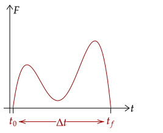
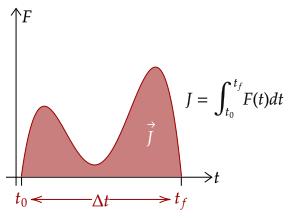
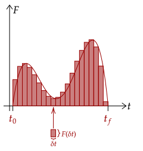

We saw before that the area under the curve of force over time is the impulse. As we saw before, we know that we can mathematically represent this by taking the
Before using the integral, we first note some notation. First, the change in time Δt is the same as the difference of the initial time and the final time, shown below.
Graphically, this corresponds to the starting point of our integral and the ending point of our integral.

With this, we can now construct the integral. The definite integral of force with respect to time over the initial time to the final time is the impulse.

This relation helps us deal with problems wherein the average force isn't given but a force-time graph is given. Of course, we need calculus here to use it.
Exercise 1
The force applied to an object of mass 5.00kg is given by N/s². The object starts at rest.
(a) What is the impulse generated after 3.00s?
(b) What is the final velocity of the object after 3.00s?
Solution
First, note the following equality, which we derived last time.
Now, we substitute.
Now we use this to get the change in velocity, which should also be the final velocity given that the initial velocity was at rest.
Giving us the final velocity is 5.40m/s.
One thing to note is that if the force is constant, the integral will simply fall back to the equation that we used.
We can also use the integral for impulse to derive another integral we saw before when we dealt with time-dependent force.
Problem 1
Use the integral for impulse to derive the following relation.
Solution
We first use one definition for the impulse, shown below, and we substitute it.
Now, we manipulate the integral for impulse.
We divide the mass by both sides. Then, we substitute the alternate form for the change in velocity, being the final velocity minus the initial velocity.
The following is now equivalent to the equation above.
Problem 2
What is the derivative of impulse with respect to time? In other words, what is ?
Solution
It is the force. If impulse is the integral of force with respect to time, then force is the derivative of impulse with respect to time.
We will end this tutorial with the formal way to prove this fact. First, we cut each of the portions of the force-time graph into small portions δt.
Thus, we have cut up the graph into tiny rectangles, each with a tiny area δJ. This area is given by the product of the length and height of the rectangle. The length is set as δt, and the height is given by the force at that δt.

We can then add up all of these tiny δJ to get the total impulse.
Now, this is just an approximation. However, as the small parts δJ approach zero, the tiny rectangles will perfectly encapsulate the area of the entire graph. Thus, we rewrite the sum into an integral.